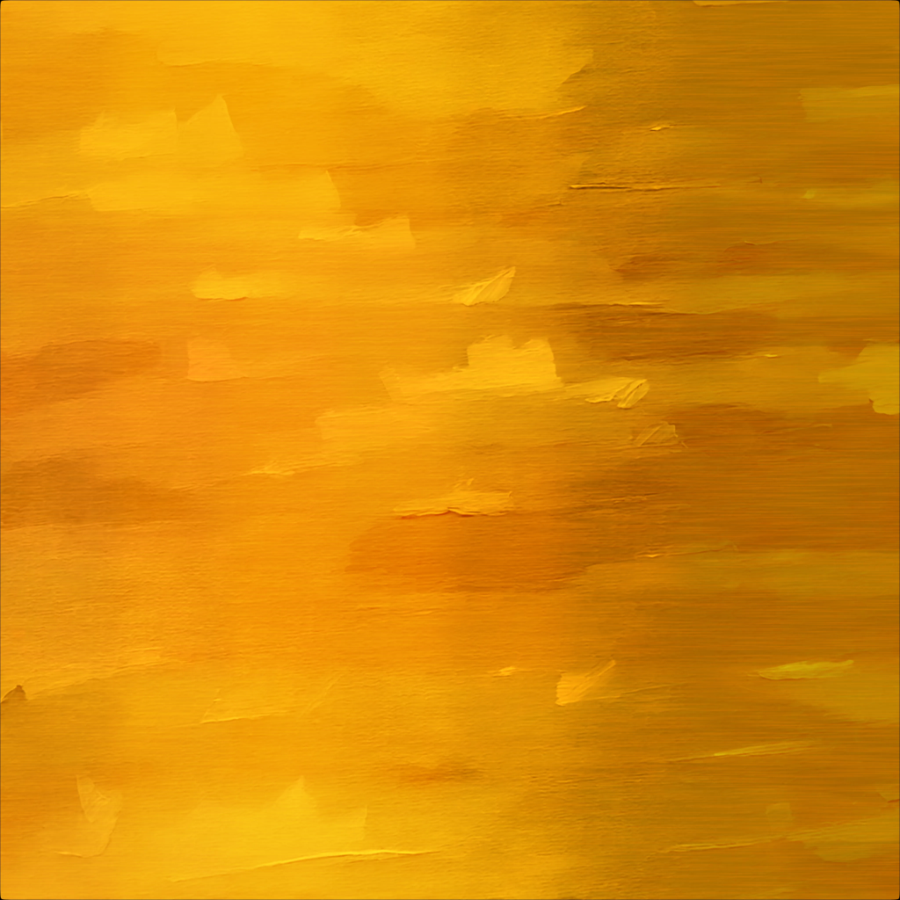

Itim Kongsakulvatanasook
Home
Demo Reel
Portfolio
eufyMake UV Printer E1
The Marble Temple
Chocolate Shop
Water Drop Automaton
Matching Elements of Mood
SU-57 Modeling/Look Development
Match To Live Action
AI Style Transfer Tools
WinterScatter Tool
Arnold Settings Capture Tool
The Silent Helper
The Woodland Grave
Blog
SCAD x NYC
Special Project
Resume
Contact
Week 02 - AI Style Transfer Tool for Texture Map
Mar 30 - Apr 05, 2026
AI Style Transfer Tool for Texture Map
Develop a stylization tool with AI integration to stylize texture maps
Style Reference
Original Texture

Stylized Texture